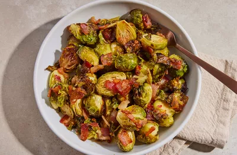

Maple roasted brussels sprouts
Maple roasted brussels sprouts
Ingredients
- Oil
- Bacon
- Brussels sprouts
- Seasoning
- Maple syrup
Steps
- Trim the brussels sprouts and cut the large ones in half.
- Transfer the sprouts to a large bowl. Toss the remaining ingredients.
- Arrange in a single layer on a baking sheet.
- Roast until the bacon is crispy and the sprouts are caramelized.
These roated Brussels sprouts with bacon are sweet, savory and completely delicious.